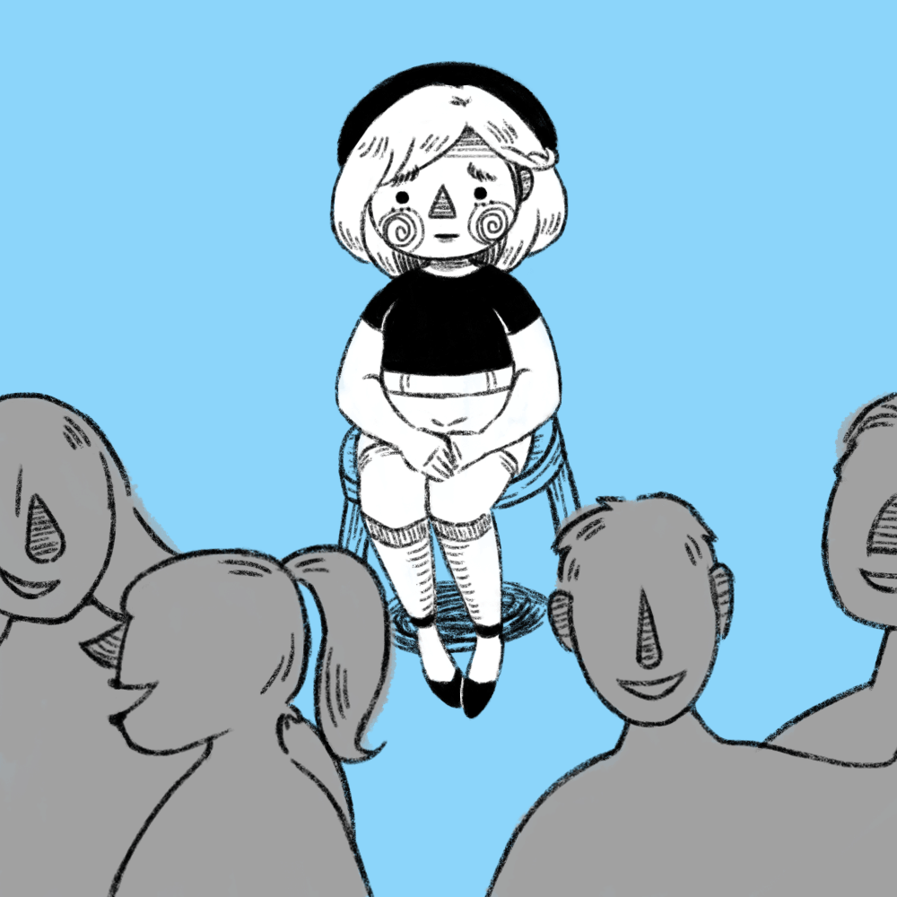

About
The road to design
Like most people, my journey to becoming a designer wasn’t linear. And, like many designers, my journey began with art.
Growing up, I loved to draw. I made picture books to go along with my short stories (typeset in Comic Sans MS, I'm certain). From making pixel art on Microsoft Paint to drawing avatars on Photoshop for Gaia Online gold, I was proactive in learning how to create digital art before I’d even learned how to do algebra.
Over time, I discovered I had a penchant for using simplistic art to convey ideas and feelings rather than illustrating literal images. Perhaps it’s due to a shortcoming in both my writing and drawing abilities, but I found that I was able to express myself better this way.
At the same time, I’d never considered pursuing anything artistic as a career. Following in my older sibling’s footsteps, I went on to major in Computer Science at UC Davis, where I went through a sequence of events that would lead me to where I am now:
I took an introductory design course at the suggestion of a close friend who was a Design major herself. Through this course I leanred about the importance of empathy and design thinking, my first application of it being through the lens of a ladybug (yes, our client was an insect).
ECS 160, or Software Engineering, was my first foray into user interface design. The course taught us how to plan development for a mobile app that would allow users to map and share scenic walks. One of the vital steps was to establish all of the different use cases for the product, which forced me to think about the context in which the app would be used and which features would be necessary.
Finally, the Computer Science major’s senior design project gave me the chance to design my first real project from scratch. Funnily enough, the client’s request was for a mobile app that would guide users through the design thinking process. I took the lead on the visual design of the app, creating the UI and illustrating the necessary graphics.
It was through design that I realized I could reconcile my analytical side with my need for an artistic outlet. Not only did it bring me back to my roots in art, but, as it turns out, design was the answer to combining my two seemingly-diverging skill sets in harmony.
Currently, I aim to design experiences and interfaces through a healthy mix of compassion, imagination, and reasoning. As with my drawings, I hope to deliver the same impact, meaning, and charm (when appropriate) to my digital products.
When I'm not designing
I am a willing servant to two fluffy bunnies who take up 90% of my brain space and energy.

The remaining 10% is divided among (but not limited to) the following:
Doodling all the cute things
Trying new restaurants and Trader Joe’s products
Listening to video game music
Playing board games
Mercilessly defeating my enemies in Mario Party*
*This statement is not endorsed by anyone.
A current goal of mine to is watch 100 movies I haven’t seen before by the end of 2019. I gladly welcome suggestions (especially ones accessible through Netflix, Hulu, or Amazon Prime).